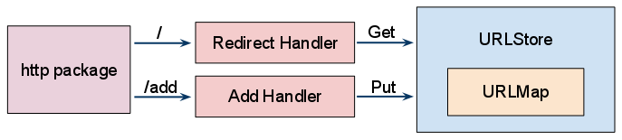

Practical Go Programming
Andrew Gerrand
adg@golang.org
http://wh3rd.net/practical-go/

Andrew Gerrand
adg@golang.org
http://wh3rd.net/practical-go/
Go is a general-purpose programming language.
Go's killer features:
This talk will cover the complete development of a simple web application.
There's a lot to cover, so we'll move pretty fast.
If you're new to Go there may be some syntax you don't understand. The important thing is to get a feel for what the program does, rather than exactly how it does it.
These slides are available at http://wh3rd.net/practical-go/ - you may want to follow along.
Complete source code and other bits are available in the git repository: http://github.com/nf/goto
Twitter stuff:
#golang hashtag
@go_nuts (that's me!)
Goto is a web service (HTTP) that does two things:
http://maps.google.com/maps?f=q&source=s_q&hl=en&geocode=&q=tokyo&sll=37.0625,-95.677068&sspn=68.684234,65.566406&ie=UTF8&hq=&hnear=Tokyo,+Japan&t=h&z=9
http://goo.gl/UrcGq
Goto maps short URLs to long URLs. To store this mapping in memory we can use a hash table.
Go's map type allows you to map values of any* type
to values of any other type.
Maps must be initialized with the built-in make function:
m := make(map[int]string) m[1] = "One" u := m[1] // u == "One" v, present := m[2] // v == "", present == false
(*The keys must be comparable with ==.)
We specify the URLStore type,
Goto's fundamental data structure:
type URLStore map[string]string m := make(URLStore)
To store the mapping of http://goto/a to http://google.com/ in m:
m["a"] = "http://google.com/"
url := m["a"]
// url == "http://google.com/"
This has a shortcoming: Go's map type is not thread-safe.
Goto will serve many requests concurrently, so we must make our
URLStore type safe to access from separate threads.
To protect the map type from being modified while it is being
read, we must add a lock to the data structure.
Changing the type definition, we make URLStore a
struct type with two fields: the map and
a RWMutex from the sync package.
import "sync"
type URLStore struct {
urls map[string]string
mu sync.RWMutex
}
An RWMutex has two locks: one for readers, and one for writers.
Many clients can take the read lock simultaneously, but only one client can
take the write lock (to the exclusion of all readers).
We must now interact with the URLStore through Set
and Get methods.
The Get method takes the read lock with mu.RLock, and
returns the URL as a string. If the key is not present in the map, the
zero value for the string type (an empty string) will be returned.
func (s *URLStore) Get(key string) string {
s.mu.RLock()
url := s.urls[key]
s.mu.RUnlock()
return url
}
The Set method takes the write lock and updates the url map.
If the key is already present, Set returns a boolean
false value and the map is not updated.
(Later, We will use this behavior to ensure that each URL has a unique key.)
func (s *URLStore) Set(key, url string) bool {
s.mu.Lock()
_, present := s.urls[key]
if present {
s.mu.Unlock()
return false
}
s.urls[key] = url
s.mu.Unlock()
return true
}
A defer statement pushes a function call onto a list.
The list of saved calls is executed after the surrounding function returns.
Defer is commonly used to simplify functions that perform various clean-up
actions.
For example, this function will print "Hello" and then "World":
func foo() {
defer fmt.Println("World")
fmt.Println("Hello")
}
We can use defer to simplify the Set and
Get methods.
There's much more to know about defer. See the "Defer, Panic, and Recover" blog post for an in-depth discussion.
Using defer, the Get method can avoid using the local
url variable and return the map value directly:
func (s *URLStore) Get(key string) string {
s.mu.RLock()
defer s.mu.RUnlock()
return s.urls[key]
}
And the logic for Set becomes clearer:
func (s *URLStore) Set(key, url string) bool {
s.mu.Lock()
defer s.mu.Unlock()
_, present := s.urls[key]
if present {
return false
}
s.urls[key] = url
return true
}
The URLStore struct contains a map field,
which must be initialized with make before it can be used.
type URLStore struct {
urls map[string]string
mu sync.RWMutex
}
Go doesn't have constructors. Instead, the convention is to write a function
named NewXXX that returns an intialized instance of the type.
func NewURLStore() *URLStore {
return &URLStore{
urls: make(map[string]string),
}
}
Creating an instance:
s := NewURLStore()
Setting a URL by key:
if s.Set("a", "http://google.com") {
// success
}
Getting a URL by key:
if url := s.Get("a"); url != "" {
// redirect to url
} else {
// key not found
}
We already have the Get method for retrieving URLs.
Let's create a Put method that takes a URL,
stores the URL under a corresponding key, and returns that key.
func (s *URLStore) Put(url string) string {
for {
key := genKey(s.Count())
if s.Set(key, url) {
return key
}
}
panic("shouldn't get here")
}
func (s *URLStore) Count() int {
s.mu.RLock()
defer s.mu.RUnlock()
return len(s.urls)
}
The genKey function takes an integer and returns a corresponding
alphanumeric key:
func genKey(n int) string { /* implementation omitted */ }
Go's http package provides the infrastructure to serve HTTP
requests:
package main
import (
"fmt"
"net/http"
)
func Hello(w http.ResponseWriter, r *http.Request) {
fmt.Fprintf(w, "Hello, world!")
}
func main() {
http.HandleFunc("/", Hello)
http.ListenAndServe(":8080", nil)
}
Our program will have two HTTP handlers:
Redirect, which redirects short URL requests, and
Add, which handles the submission of new URLs.
The HandleFunc function is used to register them with the
http package.
func main() {
http.HandleFunc("/", Redirect)
http.HandleFunc("/add", Add)
http.ListenAndServe(":8080", nil)
}
Requests to /add will be served by the Add handler.
All other requests will be served by the Redirect handler.
The Add function reads the url
parameter from an HTTP request, Puts it into
the store, and sends the corresponding short URL to the user.
func Add(w http.ResponseWriter, r *http.Request) {
url := r.FormValue("url")
key := store.Put(url)
fmt.Fprintf(w, "http://localhost:8080/%s", key)
}
But what is store?
It's a global variable pointing to an instance of URLStore:
var store = NewURLStore()
The line above can appear anywhere in the top level of a source file.
It will be evaluated at program initialization, before the main
function is called.
What about the user interface? Let's modify Add to display an
HTML form when no url is supplied:
func Add(w http.ResponseWriter, r *http.Request) {
url := r.FormValue("url")
if url == "" {
fmt.Fprint(w, AddForm)
return
}
key := store.Put(url)
fmt.Fprintf(w, "http://localhost:8080/%s", key)
}
const AddForm = `
<form method="POST" action="/add">
URL: <input type="text" name="url">
<input type="submit" value="Add">
</form>
`
The Redirect function finds the key in the HTTP request path,
retrieves the corresponding URL from the store,
and sends an HTTP redirect to the user.
If the URL is not found, a 404 "Not Found" error is sent instead.
func Redirect(w http.ResponseWriter, r *http.Request) {
key := r.URL.Path[1:]
url := store.Get(key)
if url == "" {
http.NotFound(w, r)
return
}
http.Redirect(w, r, url, http.StatusFound)
}
The key is the request path minus the first character.
For the request "/foo" the key would be "foo".
http.NotFound and http.Redirect are helpers for
sending common HTTP responses. The constant http.StatusFound
represents HTTP code 302 ("Found").
We've written under 100 lines of code, and have a complete, functional web application.

See the code we've written so far:
These slides are available at http://wh3rd.net/practical-go/
When the goto process ends, the shortened URLs in memory will be lost.
This isn't very helpful.
Let's modify URLStore so that it writes its data to a file,
and restores that data on start-up.
Go's interface types define a set of methods. Any type that implements those methods satisfies that interface.
One frequently-used interface is Writer, specified by the
io package:
type Writer interface {
Write(p []byte) (n int, err error)
}
Many types, from both the standard library and other Go code, implement the
Write method described above, and can thus be used anywhere an
io.Writer is expected.
In fact, we've already used an io.Writer in our
HTTP handlers:
func Add(w http.ResponseWriter, r *http.Request) {
...
fmt.Fprintf(w, "http://localhost:8080/%s", key)
}
The Fprintf function expects an io.Writer as its
first argument:
func Fprintf(w io.Writer, format string, a ...interface{}) (n int, error error)
Because http.ResponseWriter implements the Write
method, w can be passed to Fprint as an
io.Writer.
How should we represent the URLStore on disk?
Go's json package handles serializing and deserializing Go
data structures to and from JSON blobs.
The json package's NewEncoder and
NewDecoder functions wrap io.Writer and
io.Reader values respectively.
The resulting Encoder and Decoder objects provide
Encode and Decode methods for writing and reading
Go data structures.
Let's create a new data type, record, which describes how
single key/url pair will be stored on disk:
type record struct {
Key, URL string
}
The new save method writes a given key and url
to disk as a JSON-encoded record:
func (s *URLStore) save(key, url string) error {
e := json.NewEncoder(s.file)
return e.Encode(record{key, url})
}
But what is s.file?
URLStore's new file field (of type *os.File)
will be a handle to an open file that can be used for writing and reading.
type URLStore struct {
urls map[string]string
mu sync.RWMutex
file *os.File
}
The NewURLStore function now takes a filename
argument, opens the file, and stores the *os.File
value in the file field:
func NewURLStore(filename string) *URLStore {
s := &URLStore{urls: make(map[string]string)}
f, err := os.OpenFile(filename, os.O_RDWR|os.O_CREATE|os.O_APPEND, 0644)
if err != nil {
log.Fatal("URLStore:", err)
}
s.file = f
return s
}
The new load method will Seek to the beginning of
the file, read and Decode each record,
and store the data using the Set method:
func (s *URLStore) load() error {
if _, err := s.file.Seek(0, 0); err != nil {
return err
}
d := json.NewDecoder(s.file)
var err error
for err == nil {
var r record
if err = d.Decode(&r); err == nil {
s.Set(r.Key, r.URL)
}
}
if err == os.EOF {
return nil
}
return err
}
Took hook it all up, first we add a call to load to the
constructor function:
func NewURLStore(filename string) *URLStore {
s := &URLStore{urls: make(map[string]string)}
f, err := os.OpenFile(filename, os.O_RDWR|os.O_CREATE|os.O_APPEND, 0644)
if err != nil {
log.Fatal("URLStore:", err)
}
s.file = f
if err := s.load(); err != nil {
log.Println("URLStore:", err)
}
return s
}
And save each new URL as it is Put:
func (s *URLStore) Put(url string) string {
for {
key := genKey(s.Count())
if s.Set(key, url) {
if err := s.save(key, url); err != nil {
log.Println("URLStore:", err)
}
return key
}
}
panic("shouldn't get here")
}
Finally, we must specify a filename when instantiating the URLStore:
var store = NewURLStore("store.json")
See the code we've written so far:
These slides are available at http://wh3rd.net/practical-go/
Consider this pathological situation:
Put will return.
Add requests to go through.
To remedy these issues, we should decouple the Put and
save processes.
A goroutine is a lightweight thread managed by the Go runtime.
Goroutines are launched by a go statement. This code executes
both foo and bar concurrently:
go foo() bar()
The foo function runs in a newly created goroutine, while
bar runs in the main goroutine.
Memory is shared between goroutines, like in many popular threading models.
Goroutines are cheaper to create than operating system threads.
A channel is a conduit, like a unix pipe, through which you can send typed values. They provide many interesting algorithmic possibilities.
Like maps, channels must be initialized with make:
ch := make(chan int) // a channel of ints
Communication is expressed using the "channel operator", <- :
ch <- 7 // send the int 7 to the channel i := <-ch // receive an int from the channel
Data always moves in the direction of the arrow.
Communicating between goroutines:
func sum(x, y int, c chan int) {
c <- x + y
}
func main() {
c := make(chan int)
go sum(24, 18, c)
fmt.Println(<-c)
}
Channel send/receive operations typically block until the other side is ready. Channels can be either buffered or unbuffered. Sends to a buffered channel will not block until the buffer is full.
Buffered channels are initialized by specifying the buffer size as the
second argument to make:
ch := make(chan int, 10)
See the blog posts "Share Memory by Communicating" and "Timing out, moving on" for a detailed discussion of goroutines and channels.
Instead of making a function call to save each record to disk,
Put can send a record to a buffered channel:
type URLStore struct {
urls map[string]string
mu sync.RWMutex
save chan record
}
func (s *URLStore) Put(url string) string {
for {
key := genKey(s.Count())
if s.Set(key, url) {
s.save <- record{key, url}
return key
}
}
panic("shouldn't get here")
}
At the other end of the save channel we must have a receiver.
This new method, saveLoop, will run in a separate goroutine.
It receives record values and writes them to a file.
func (s *URLStore) saveLoop(filename string) {
f, err := os.OpenFile(filename, os.O_WRONLY|os.O_CREATE|os.O_APPEND, 0644)
if err != nil {
log.Fatal("URLStore:", err)
}
e := json.NewEncoder(f)
for {
r := <-s.save
if err := e.Encode(r); err != nil {
log.Println("URLStore:", err)
}
}
}
We need to modify the NewURLStore function to launch the
saveLoop goroutine (and remove the now-unnecessary file opening
code):
const saveQueueLength = 1000
func NewURLStore(filename string) *URLStore {
s := &URLStore{
urls: make(map[string]string),
save: make(chan record, saveQueueLength),
}
if err := s.load(filename); err != nil {
log.Println("URLStore:", err)
}
go s.saveLoop(filename)
return s
}
Go's flag package makes it easy to handle command-line flags.
Let's use it to replace the constants we have in our code so far.
import ( "encoding/json" "flag" "fmt" "net/http" )
We first create some global variables to hold the flag values:
var (
listenAddr = flag.String("http", ":8080", "http listen address")
dataFile = flag.String("file", "store.json", "data store file name")
hostname = flag.String("host", "localhost:8080", "host name and port")
)
Then we can add flag.Parse() to the main function,
and instantiate the URLStore after the flags have been parsed
(once we know the value of *dataFile).
var store *URLStore
func main() {
flag.Parse()
store = NewURLStore(*dataFile)
http.HandleFunc("/", Redirect)
http.HandleFunc("/add", Add)
http.ListenAndServe(*listenAddr, nil)
}
And substitute *hostname in the Add handler:
fmt.Fprintf(w, "http://%s/%s", *hostname, key)
See the code we've written so far:
These slides are available at http://wh3rd.net/practical-go/

So far we have a program that runs as a single process. But a single process running on one machine can only serve so many concurrent requests.
A URL Shortener typically serves many more Redirects (reads) than it does Adds (writes).
Therefore we can create an arbitrary number of read-only slaves that serve and cache Get requests, and pass Puts through to the master.
Go's rpc package provides a convenient means of making function
calls over a network connection.
Given a value, rpc will expose to the network the value's methods
that meet this function signature:
func (t T) Name(args *ArgType, reply *ReplyType) error
To make URLStore an RPC service we need to alter the
Put and Get methods so that they match this
function signature:
func (s *URLStore) Get(key, url *string) error func (s *URLStore) Put(url, key *string) error
And, of course, we need to change the call sites to call these functions appropriately.
To make URLStore an RPC services, we need to alter the
Get and Put methods to be rpc-friendly.
The function signatures change, and now return an error value.
The Get method can return an explicit error when the provided key
is not found:
func (s *URLStore) Get(key, url *string) error {
s.mu.RLock()
defer s.mu.RUnlock()
if u, ok := s.urls[*key]; ok {
*url = u
return nil
}
return os.NewError("key not found")
}
Beyond the function signature, the Put method barely changes
in its actual code (not shown here):
func (s *URLStore) Put(url, key *string) error
In turn, the HTTP handlers must be modfied to accommodate the changes to
URLStore.
The Redirect handler now displays the error returned by
the URLStore:
func Redirect(w http.ResponseWriter, r *http.Request) {
key := r.URL.Path[1:]
var url string
if err := store.Get(&key, &url); err != nil {
http.Error(w, err.Error(), http.StatusInternalServerError)
return
}
http.Redirect(w, r, url, http.StatusFound)
}
The Add handler changes in much the same way:
func Add(w http.ResponseWriter, r *http.Request) {
url := r.FormValue("url")
if url == "" {
fmt.Fprint(w, AddForm)
return
}
var key string
if err := store.Put(&url, &key); err != nil {
http.Error(w, err.Error(), http.StatusInternalServerError)
return
}
fmt.Fprintf(w, "http://%s/%s", *hostname, key)
}
Add a command-line flag to enable the RPC server:
var rpcEnabled = flag.Bool("rpc", false, "enable RPC server")
And then Register the URLStore with the
rpc package and set up the RPC-over-HTTP handler with
HandleHTTP.
func main() {
flag.Parse()
store = URLStore(*dataFile)
if *rpcEnabled {
rpc.RegisterName("Store", store)
rpc.HandleHTTP()
}
... (set up http)
}
Now that we have the URLStore available as an RPC service, we can build another type that forwards requests to the RPC server.
We will call it ProxyStore:
type ProxyStore struct {
client *rpc.Client
}
func NewProxyStore(addr string) *ProxyStore {
client, err := rpc.DialHTTP("tcp", addr)
if err != nil {
log.Println("ProxyStore:", err)
}
return &ProxyStore{client: client}
}
Its Get and Put methods pass the requests directly
to the RPC server:
func (s *ProxyStore) Get(key, url *string) error {
return s.client.Call("Store.Get", key, url)
}
func (s *ProxyStore) Put(url, key *string) error {
return s.client.Call("Store.Put", url, key)
}
But there's something missing: the slave must cache the data it gets from the master, otherwise it provides no benefit.
We already have the perfect data structure for caching this data,
the URLStore.
Let's add a URLStore field to ProxyStore:
type ProxyStore struct {
urls *URLStore
client *rpc.Client
}
func NewProxyStore(addr string) *ProxyStore {
client, err := rpc.DialHTTP("tcp", addr)
if err != nil {
log.Println("ProxyStore:", err)
}
return &ProxyStore{urls: NewURLStore(""), client: client}
}
(And we must modify the URLStore so that it doesn't try to write
to or read from disk if an empty filename is given — no big deal.)
The Get method should first check if the key is in the cache.
If present, Get should return the cached result. If not,
it should make the RPC call, and update its local cache with the result.
func (s *ProxyStore) Get(key, url *string) error {
if err := s.urls.Get(key, url); err == nil {
return nil
}
if err := s.client.Call("Store.Get", key, url); err != nil {
return err
}
s.urls.Set(key, url)
return nil
}
The Put method need only update the cache when it performs a
successful RPC Put.
func (s *ProxyStore) Put(url, key *string) error {
if err := s.client.Call("Store.Put", url, key); err != nil {
return err
}
s.urls.Set(key, url)
return nil
}
Now we want to be able to use ProxyStore with the web front-end,
in the place of URLStore.
Since they both implement the same Get and Put
methods, we can specify an interface to generalize their behavior:
type Store interface {
Put(url, key *string) error
Get(key, url *string) error
}
Now our global variable store can be of type Store:
var store Store
Our main function can instantiate either a URLStore
or ProxyStore depending on a new command-line flag:
var masterAddr = flag.String("master", "", "RPC master address")
func main() {
flag.Parse()
if *masterAddr != "" {
// we are a slave
store = NewProxyStore(*masterAddr)
} else {
// we are the master
store = NewURLStore(*dataFile)
}
...
}
The rest of the front-end code continues to work as before.
No need to tell it about the Store interface — it just works!
Now we can launch a master and several slaves, and stress-test the slaves.
See the complete program:
These slides are available at http://wh3rd.net/practical-go/
While this program does what we set out to do, there are a few ways it could be improved:
template package.
Andrew Gerrand
adg@golang.org
http://wh3rd.net/practical-go/